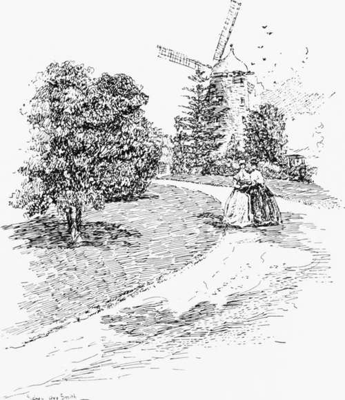

The Windmills Of Old Sydney
Description
This section is from the book "Stories Of Old Sydney", by Charles H. Bertie.
The Windmills Of Old Sydney
The lofty windmills that with outspread sail Thick line the hills and court the rising gale.
ON reading these lines it requires no great imagination to conjure up the vision of a delightful English village of one hundred years ago, with a rotund and jolly miller standing at the door of his windmill, while above the great arms are clanking round and the shadows dance on the Green sward to the tune of the sweeps.
But this pleasant vision must be resolved into its airy fabrics and a somewhat ruder picture conjured up from our shadow world. For it was of Sydney--a young but picturesque Sydney-that these lines were written, and the poet was William Charles Wentworth, then a student of the University of Cambridge.
It was no exaggeration to say of Sydney in the early years of the nineteenth century that the " lofty windmills thick line the hills." The silhouette of the city of our day against the reddening flush of the setting sun is a picture of delight, but in mv mind there is alwavs a desire for one view of that
Sydney where cathedrals and palaces give way to the hills " thick lined " with " lofty mills."
To allow us to realize what we have lost, from the point of view of picturesqueness, by the decay of the windmills, we have a number of pictures of early Sydney wherein the mills are a pleasing feature. To appreciate fully the value of a windmill as a landscape effect we must turn to the works of the great masters. I have before me as I write an engraving of " A view on the river," by Jakob van Ruysdael, the great Dutch painter. On the river is a sloop, and in the distance the spires of a church, while heavy clouds darken the sky; dominating the whole is a round windmill with three great sweeps majestic against the lowering sky. There is a sense of vastness, almost infinity, conveyed by those mighty arms stretching towards the heavens, in strong contrast with the placid Dutch scene beneath. And have we not the mills of the miller's son, good honest John Constable, who wrote of Ruysdael " I shall begin painting as soon as I have the loan of a sweet little picture by Jacob Ruysdael to copy"?
If only to teach our artists the "psychology of light" we should have a windmill in Sydney. The desire of Constable for the beauty of light is seen in his letter to his friend Fisher.
My Lock," he wrote, " is liked at the Academy, and indeed it forms a decided feature and its light cannot be put out, because it is the light of Nature, the mother of all that is valuable in poetry, painting, or anything else where an appeal to the soul is required." It was during the year when Constable worked in his father's mill that he absorbed the holiness of light and saw the beauty that made him the great painter of rural England. In Rembrandt we have a more intense passion for the fundamental lights, and it would be strange if the luminous lights in his father's mill had no share in educating the young painter's eyes.
The enticing steps that have led me from Sydney to Holland and Rembrandt are perfectly plain, but the return path presents no such gradations ; in fact, all I can perceive is a steep cliff, at the bottom of which is the First Fleet to arrive in Port Jackson. If my readers therefore will provide themselves with wings and drop as gently as possible down to the year 1788, we shall pick up our story of Sydney and its windmills. In this year Governor Phillip arrived at Port Jackson with his extraordinary fleet-surely the most remarkable set of nation builders the world has ever seen-and planted the settlement on the shores of Sydney Cove. To grind wheat the Governor brought with him some iron mills operated by hand, but in July. 1790, he wrote to Under-Secretary Xepean that " As the iron mills sent out for the purpose of grinding wheat are easily rendered useless, and destroyed, and will require great labour to grind corn for a considerable number of people, windmills will be wanted, and for the sending out of which I am to request that you. Sir, will take the necessary steps, if it is approved of by Mr. Secretary Grenville. to whom
I have written on the subject. As we have not any good millwrights in the colony, I presume some convicts who have been brought up in that branch might be procured." I like that last sentence; it suggests the picture of some astonished and unfortunate millwright, leaning over a fence to pick a rose, being apprehended for the dire offence and subsequently forming one of the unwilling passengers on a transport bound for Botany Bay. Oh, yes, Governor Phillip, they " might be procured."
The Governor cried aloud for his windmills, but cried in vain. In a parliamentary paper of the year 1792 I find a letter wherein the Lord Commissioner of the Treasury desired Alexander Davison, Esquire, to provide the articles contained in a list accompanying for the " use of the convicts in New South Wales." The list is a curious one, and commences with 928 pieces Ozenburghs, 310 pieces coarse cloth, 560 dozen pairs coarse yarn stockings; it continues through " 33,367 needles." and "450 cwt. soap," concluding with " 4 pair millstones, with the necessary apparatus and gear for 2 windmills." In 1793 the materials for a mill with two pairs of millstones arrived at Sydney Cove, but it does not appear to have been erected. Prior to this, two men, Allen and Thorpe, had reached the settlement, the former as master miller and the latter as master millwright. Both men were unsuitable; (iovernor Hunter's opinion of Allen was " that he had cost the public £600 and had not earned £5."
A Darling hurst Mill.
It must have been a coincidence, as Governor Phillip's request that " a good millwright might be procured " could not have borne fruit so soon ; but the year 1790 marks the arrival of one James Wilkinson, who claimed to be a millwright. The Lieutenant-Governor gave this man permission to construct a man-power mill, which was not a success. He obtained leave to try again with a larger and more powerful mill. Another Richmond appeared in the field in the person of one John Baughan. who was granted permission to build a rival mill. The trial of strength between Messrs. Wilkinson and Baughan is well described by the late Norman Selfe, to whom I am indebted for much information. Mr. Selfe writes: " In December, 1793. the rival mill houses (erected a little south of Bridge Street on the old Marine Parade) were ready for their tiled roofs, and on the 10th of March. 1794. the first trial of Baughan's mill was made. It was driven by nine men. who walked in a circle like sailors around a capstan head, and, after it got into good working order, ground fifty-three pounds of wheat in seventeen minutes. Wilkinson's second mill was started at the end of April, 1794, and was much larger than his first one at Parramatta, being worked by six men instead of two, who, instead of going round in a circle as with Baughan's mill, walked inside a large wheel like squirrels or white mice in a cage. (The diameter of this wheel was 22 feet).
Continue to: